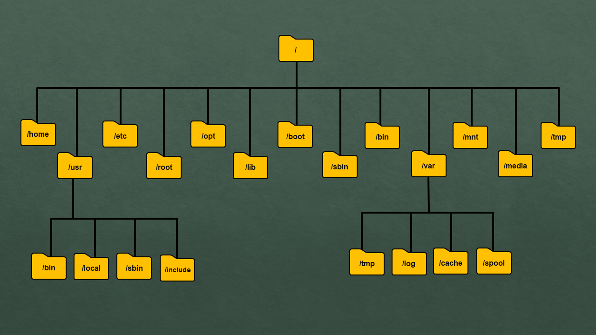
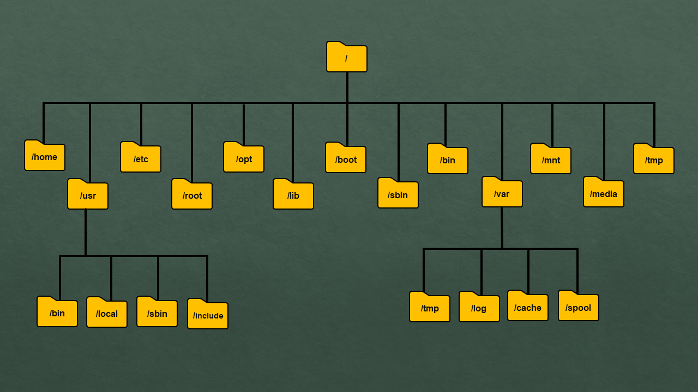

Working with Files and Directories
In Linux (and other Unix-based systems), everything is a file — including directories! Knowing how to create, navigate, and manage them is a core Bash skill.
In Linux (and other Unix-based systems), everything is a file — including directories! Knowing how to create, navigate, and manage them is a core Bash skill.
Use the mkdir command to create a new directory:
Let’s check if it was created with ls (list):
Want detailed information like permissions, ownership, and timestamps? Use the long listing option:
Use cd (change directory) to move between folders. And if you ever get lost, pwd (print working directory) shows where you are.
Tip: cd .. takes you one directory up!
Use rm to delete files, and rm -r to remove directories and their contents.
⚠️ Warning: There's no undo button! Double-check what you're deleting.
test_folder.touch notes.txt.rm -r test_folder.Try these in the practice terminal to build muscle memory!